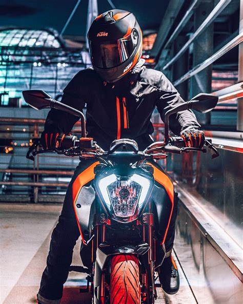
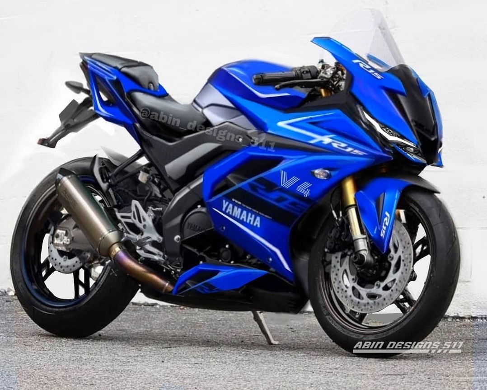
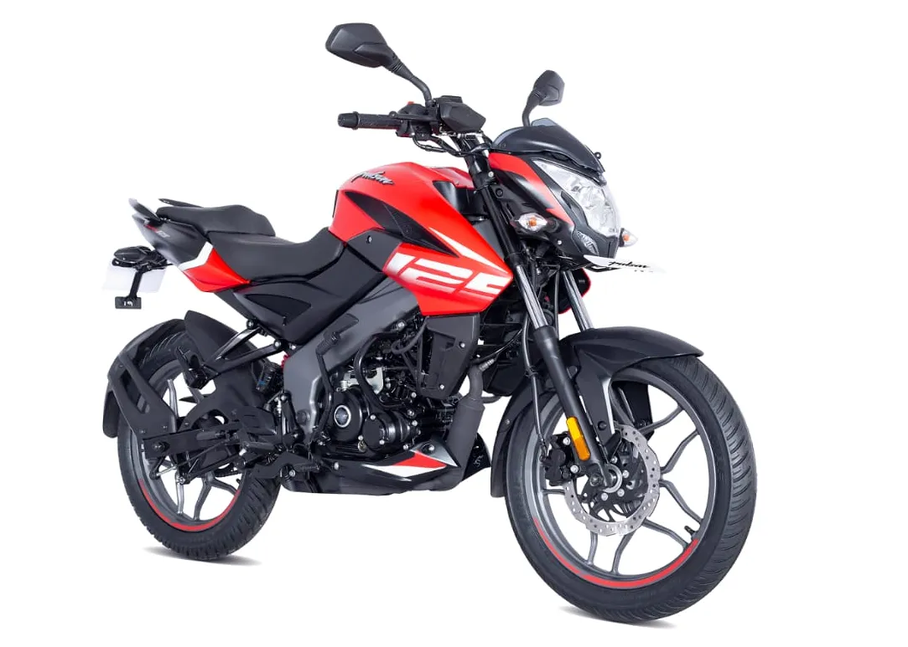

Favorite bikes
KTM

The KTM 250 Duke is a street bike available in India. Here are some key
details about it: Engine: It’s powered by a 249.07 cc BS6 Phase 2
engine. Power and Torque: The engine produces 30.57 bhp of power and 25
Nm of torque. Features: The 250 Duke comes with a ride-by-wire throttle
system, a slipper clutch, and a quick shifter. It also has a 5-inch LCD
display that’s Bluetooth-enabled and offers turn-by-turn navigation.
Design: The 250 Duke received a significant update in 2024. Its bodywork
is more similar to the flagship 1290 Super Duke, with a more sinister
and radical front fascia, muscular fuel tank section, and a new die-cast
aluminum sub-frame.
YAMAHA R15 V4

The Yamaha R15 V4 gets the 155cc liquid-cooled, SOHC, fuel-injected
engine that generates 18.4PS @10000rpm and 14.2Nm @7500rpm, paired with
a 6-speed gearbox. The powertrain uses variable valve actuation (VVA)
technology to balance good bottom-end grunt and top-end drive. Further,
the assist and slipper clutch ensures a light lever action
HERO XOOM

it comes to speed, the Hero Xoom 110 offers a decent performance for a
scooter in its segment. Let’s take a closer look: The Xoom 110 is
powered by a 110.9cc BS6 engine that produces 8.05 bhp of power and 8.7
Nm of torque. While it’s not a high-performance sports bike, it’s
well-suited for city commuting and short rides. The scooter’s top speed
is around 85 km/h (kilometers per hour), which is sufficient for most
urban scenarios. Keep in mind that scooters are designed more for
efficiency, comfort, and practicality rather than outright speed.
BAJAJ

Now, the engine the 2021 Pulsar NS 125 comes powered by a 124.45 cc
SOHC, two-valve, air-cooled DTS-i motor. This engine, paired to a
five-speed constant mesh gearbox, belts out a maximum power output of 12
bhp at 8,500 rpm along with a peak torque of 11 Nm at 7,000 rpm. The
suspension duties on the bike are tended to by front telescopic forks
with Nitrox mono-shock while the breaking duties are tended to by front
disc brake and rear drum brake. Sarang Kanade, President - Motorcycles,
Bajaj Auto, said, "We are excited to bring the pedigree of the higher cc
Pulsar NS series bikes, for first-time performance riding enthusiasts.
JUPITER

TVS Jupiter is a variomatic scooter launched in September 2013 by
India's TVS Motor Company.The launch of the scooter marked the
company's entry into the part of the market that mainly targets females.